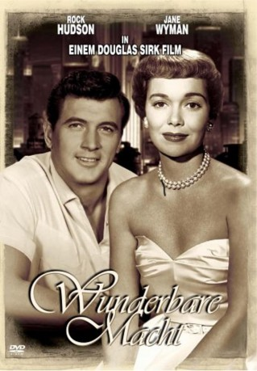
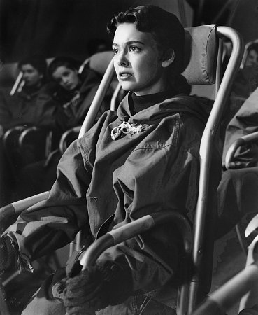

#8929 Die Wunderbare Macht
Alternativ: Magnificent Obsession
Auszeichnungen: für 1 Oscars nominiert
 
 IMDB-Wertung: 7.1 / 10
IMDB-Wertung: 7.1 / 10  Metascore: 0
Metascore: 0 
Manchmal treibt der Zufall ein böses Spiel: Dr. Phillips rettet dem Playboy Bob Merrick das Leben und kommt selbst dabei um. Kurz darauf verliebt sich Bob in Helen die Witwe des Arztes. Als sie die Wahrheit über ihn erfährt, läuft sie davon, direkt vor ein Auto. Helen erblindet durch den Unfall. Öffnet das dem egoistischen Lebemann Bob endlich die Augen?
Jahr: 1954
Dauer: 111 Minuten
FSK: 12
Land: USA Studio: Universal InternationalTonspuren: DD2.0 - ,
Untertitel:
Auflösung: 1080p (1920x960) Größe: 8140 MB
Genre: Drama, Liebe
Regisseur: Douglas Sirk
Drehbuch: Lloyd C. Douglas
Soundtrack: Frank Skinner
Darsteller:
- Jane Wyman als Helen Phillips
 Rock Hudson als Bob Merrick
Rock Hudson als Bob Merrick Agnes Moorehead als Nancy Ashford
Agnes Moorehead als Nancy Ashford- Otto Kruger als Randolph
-  Barbara Rush als Joyce Phillips
 Gregg Palmer als Tom Masterson
Gregg Palmer als Tom Masterson- Paul Cavanagh als Dr. Giraud
- Sara Shane als Valerie
 Richard H. Cutting als Dr. Dodge
Richard H. Cutting als Dr. Dodge- Judy Nugent als Judy
 Helen Kleeb als Mrs. Eden
Helen Kleeb als Mrs. Eden- John Mylong als Dr. Hofer
- Alexander Campbell als Dr. Allan
- Mae Clarke als Mrs. Miller
 Gail Bonney als Phyllis (uncredited)
Gail Bonney als Phyllis (uncredited) Lance Fuller als Bar Patron (uncredited)
Lance Fuller als Bar Patron (uncredited)- Lisa Gaye als Switchboard Girl (uncredited)
- Jack Kelly als First Mechanic (uncredited)
- William Leslie als Bar Patron (uncredited)
 George Lynn als Williams - Bob's Butler (uncredited)
George Lynn als Williams - Bob's Butler (uncredited) Kathleen O'Malley als Switchboard Girl (uncredited)
Kathleen O'Malley als Switchboard Girl (uncredited)- Lee Roberts als Joe - Mechanic (uncredited)
 Robert B. Williams als State Police Sergeant Burnham (uncredited)
Robert B. Williams als State Police Sergeant Burnham (uncredited)- Rudolph Anders als Dr. Fuss
- Fred Nurney als Dr. Laradetti
- Harvey Grant als Chris
- Joseph Mell als Dan
- George Brand als Doctor (uncredited)
- Jack Chefe als Waiter (uncredited)
- Harold Dyrenforth als Mr. Jouvet (uncredited)
- Jack Gargan als Doctor (uncredited)
- Herschel Graham als Bit Role (uncredited)
- Joy Hallward als Maid (uncredited)
- Myrna Hansen als Bar Patron (uncredited)
 Bob Herron als Taxi Driver (uncredited)
Bob Herron als Taxi Driver (uncredited)- Bradford Jackson als Bar Patron (uncredited)
- Lucille La Marr als Nurse (uncredited)
- Paul Levitt als Anesthetist (uncredited)
- Ray Quinn als Doctor (uncredited)
- Norbert Schiller als Julian Lang - Inter-Europa Travel Agent (uncredited)
- Frederick Stevens als Cafe Owner (uncredited)
- Amzie Strickland als Luncheon Guest (uncredited)
- Greta Ullmann als Flower Saleswoman (uncredited)
- Charles Victor als Doctor (uncredited)
- Will J. White als State Police Sergeant Bill Ames (uncredited)
- Helen Winston als Receptionist (uncredited)
Datei: X:\1950-1959\Wunderbare Macht, Die (1954, FSK12, 1920x960).mkv seit 08.05.2018
Festplatte: HD 1900-1970
 Es gibt insgesamt 141 Filme in der Gruppe '1950-1959'
Es gibt insgesamt 141 Filme in der Gruppe '1950-1959'